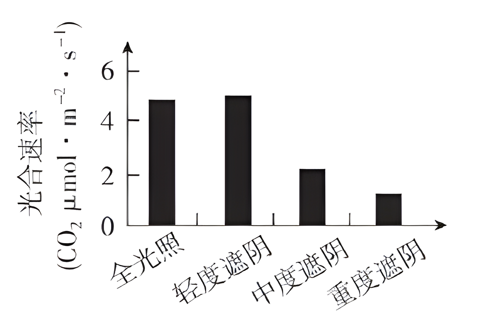
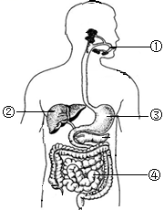
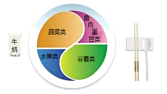

2024年北京市西城区中考生物真题 · 选择题 第6、7、8、9、10题
6. 蒸腾作用是植物体重要 生理活动之一。以下相关叙述错误的是（ ）
生理活动之一。以下相关叙述错误的是（ ）
A. 水可以通过叶片的气孔散失到大气中
B. 植物在不同条件下蒸腾速率是相同的
C. 蒸腾作用有助于降低叶片表面的温度
D. 蒸腾作用为水和无机盐运输提供动力
7. 香果树是我国特有的濒危珍稀植物，自然条件下成苗率低。为促进香果树繁育，科研人员研究不同遮阴程度对幼苗光合速率的影响，结果如图。下列相关叙述错误的是

A. 四组幼苗应置于相同环境温度下B. 光合速率受光照强度的影响
C. 轻度遮阴时幼苗释放的氧气多D. 重度遮阴条件最适宜培育幼苗
8. 如图是人体消化系统结构模式图。下列相关叙述错误的是

A. 脂肪可①中初步分解
B. ②所示的消化腺可分泌胆汁
C. ③分泌消化液含蛋白酶
D. 消化和吸收的主要场所是④
9. 《中国居民膳食指南（2022）》通过平衡膳食餐盘（如图）宣传平衡膳食的理念。下列相关叙述错误的是

A. 肉蛋奶是人体所需能量的主要来源
B. 水果、蔬菜可提供维生素
C. 摄入食物的类别要多样
D. 摄入食物的量要适当
10. 血液成分中，富含血红蛋白，具有运输氧功能的是（ ）
A. 白细胞B. 红细胞C. 血小板D. 血浆